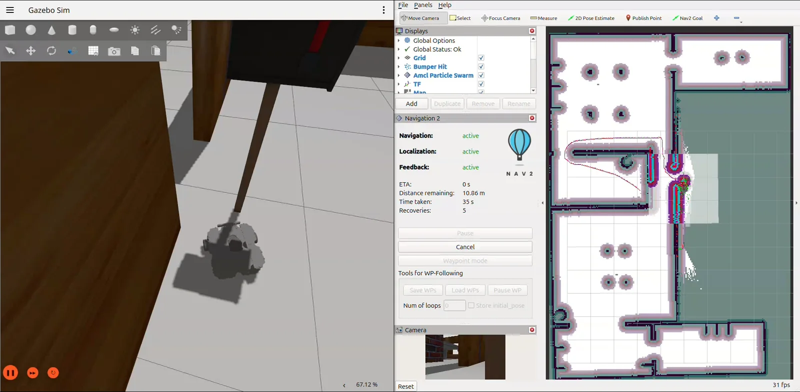
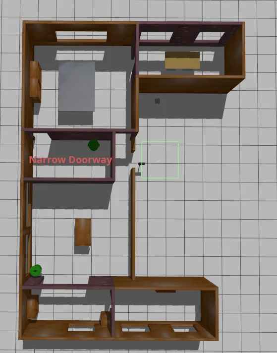
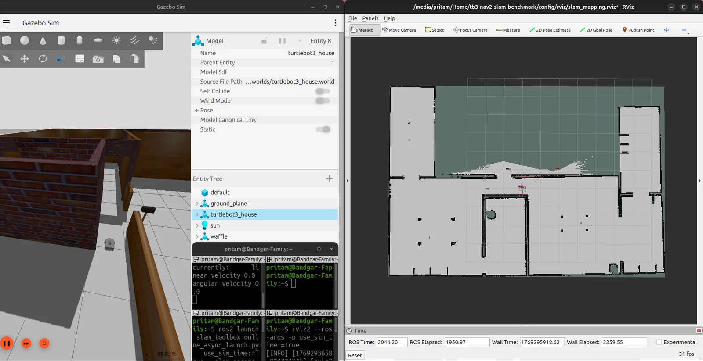
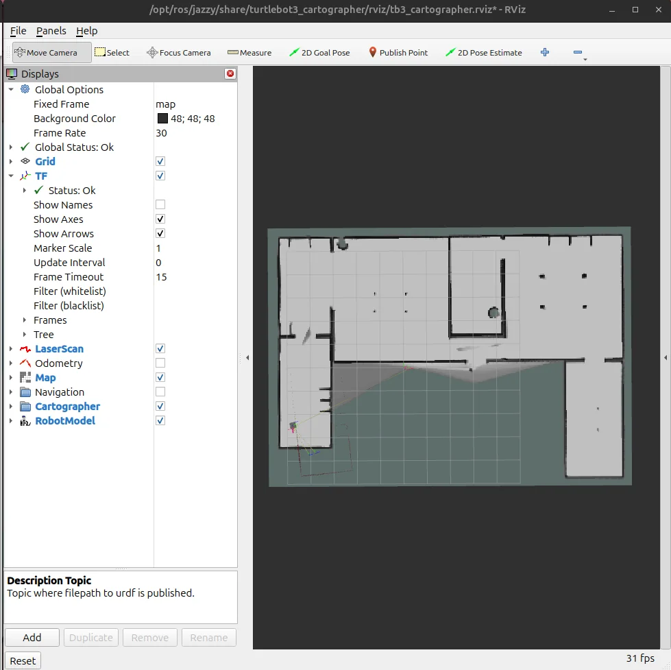
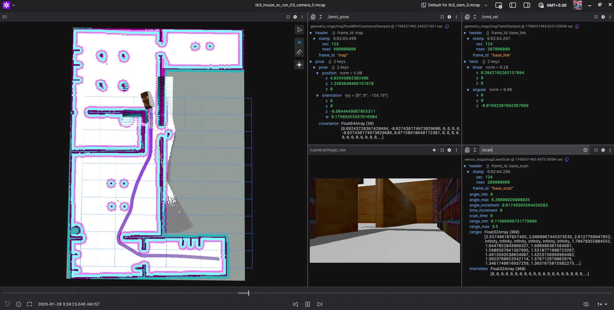

Overview
I set up mapping, localization and navigation for a TurtleBot3 Waffle in the Gazebo house world. I used SLAM Toolbox to make the map used for Nav2 tests, tried Cartographer as a second mapping approach, and checked AMCL localization and Nav2 goals in RViz. The doorway investigation came after single-goal and waypoint navigation were already working in open areas.
Implementation
- Generated occupancy maps with SLAM Toolbox and Cartographer. Used the SLAM Toolbox map for the documented doorway tests.
- Tested Nav2 planning, DWB control and AMCL in the simulated house; inspected costmaps and navigation behavior in RViz and Foxglove.
- Logged seven experiments at an approximately 0.81 m doorway. Tests 01–05 changed inflation, controller scores, planning settings and footprint radius without resolving the issue.
- Test 06 used a rectangular footprint. The global plan selected a tight passage alongside the mailbox; the local controller stalled and recovery attempts did not complete the route.
- Test 07 restored a circular radius of 0.15 m and sent four goals with the Nav2 Simple Commander Python API. The recorded run completed the waypoint mission.
What changed after testing
Open-area goals worked, but the robot kept stopping at the narrow doorway, and Tests 01–05 did not fix it. In Test 06, with the rectangular footprint, the global planner chose a gap beside the mailbox that the DWB controller could not execute safely. For Test 07, I restored the default Waffle circular radius of 0.15 m and divided the mission into four waypoints with the Nav2 Simple Commander API. Instead of asking Nav2 to plan one route through the constrained area, I used intermediate goals to guide the approach and passage. The recorded Gazebo run completed the mission.
Test 06 and Test 07
Compare the rectangular-footprint failure with the final recorded waypoint run.


Rectangular footprint: global planning selected a narrow lateral gap; the local controller stalled.
Test 07: conservative circular radius plus four scripted goals.
Waypoint mission
The Simple Commander script sends four map-frame goals: (4.5, 5.3), (3.0, 2.5), (4.5, 5.3), and (0.3, 3.0). Goals 1 and 3 are the same location. These are planned target positions, not a measured trajectory.
Screenshots and recordings







